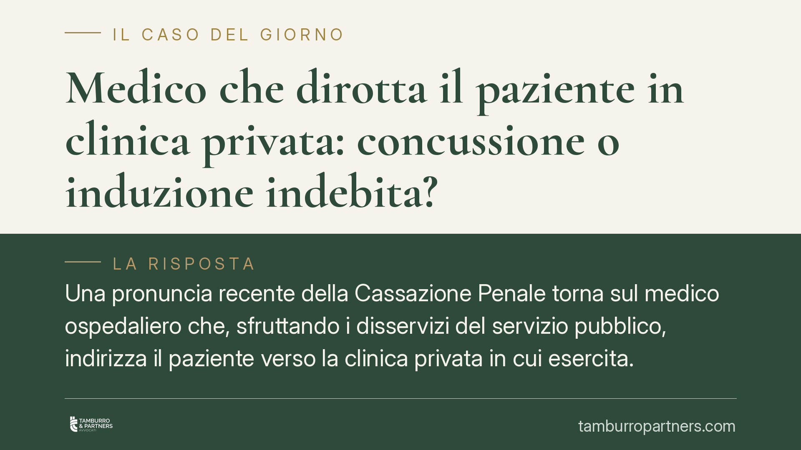

Medico che dirotta il paziente in clinica privata: concussione o induzione indebita?
Una pronuncia recente della Cassazione Penale torna sul medico ospedaliero che, sfruttando i disservizi del servizio pubblico, indirizza il paziente verso la clinica privata in cui esercita. Il tema è la corretta qualificazione: concussione o induzione indebita? La differenza non è formale: cambia la pena, cambia la posizione del paziente e cambia la strategia difensiva. Un nodo interpretativo tutt'altro che chiuso.

Il caso e una premessa di metodo
Una decisione recente della Cassazione Penale ha esaminato la condotta di un medico dipendente del Servizio Sanitario Nazionale che, occultando le reali priorità organizzative e prospettando tempi di attesa insostenibili nella struttura pubblica, indirizzava i pazienti verso la clinica privata dove svolgeva attività a pagamento.
Avvertenza redazionale. Gli estremi identificativi della sentenza (numero e anno) sono in corso di verifica presso la nostra redazione e vengono qui volutamente omessi. Non riportiamo numeri di provvedimento non confermati. Il valore di questo contributo sta nell'inquadramento del problema, non nella citazione di un singolo dispositivo.
Inquadramento normativo: due reati vicini, non uguali
Il codice penale distingue due figure che nel linguaggio comune si confondono.
La concussione (art. 317 c.p.) punisce il pubblico ufficiale che, abusando della propria qualità o dei propri poteri, costringe taluno a dare o promettere denaro o altra utilità. La costrizione presuppone una minaccia di un danno ingiusto (contra ius): la volontà della vittima è piegata, non semplicemente orientata.
L'induzione indebita (art. 319-quater c.p.) punisce invece il pubblico ufficiale che, con abuso, induce taluno alla stessa dazione. Qui non c'è costrizione: c'è persuasione, pressione, prospettazione capziosa. E — dato decisivo — nell'induzione è punibile anche il privato che ha dato o promesso, mentre nella concussione il privato è vittima.
Il criterio distintivo è fissato dalle Sezioni Unite nel caso Maldera (Cass. SU n. 12228/2014): la concussione richiede la prospettazione di un male ingiusto che coarta la volontà; l'induzione opera invece attraverso inganno, suggestione o pressione morale, lasciando al privato un margine di scelta, spesso perché anche lui trae un vantaggio indebito.
Perché la qualificazione come concussione è fragile
La condotta descritta — disservizi reali, informazioni occultate, rappresentazione distorta delle liste d'attesa — descrive tipicamente un inganno o una pressione, non una minaccia.
Il paziente che accetta l'intervento privato perché convinto (falsamente) di non avere alternative tempestive non è costretto da una minaccia contra ius: è indotto da una rappresentazione falsata della realtà. Manca l'elemento che la giurisprudenza pretende per l'art. 317: la prospettazione esplicita di un danno ingiusto.
Anzi, quando l'abuso si esaurisce nell'artificio e nel raggiro sullo stato dei fatti, e il pubblico ufficiale mira a un profitto privato con danno del paziente, il baricentro può spostarsi verso la truffa aggravata (art. 640 c.p.), che è cosa ancora diversa. La truffa richiede artifici e raggiri con induzione in errore e ingiusto profitto; l'induzione indebita richiede l'abuso della qualità pubblica.
La scelta tra art. 317, art. 319-quater e art. 640 non è un tecnicismo per addetti ai lavori: dipende dalla prova concreta di cosa il medico ha effettivamente detto e fatto, e di quale leva psicologica ha azionato sul paziente.
Implicazioni pratiche
Per il medico (in regime intramoenia o extramoenia). L'attività privata svolta occultando o comprimendo la disponibilità della struttura pubblica espone a responsabilità penale. La riqualificazione da concussione a induzione indebita non è un'assoluzione: nell'art. 319-quater il privato paziente perde la veste di vittima, ma il pubblico ufficiale resta punibile, con implicazioni su misure cautelari e interdittive.
Per il paziente. La qualificazione incide sulla sua posizione processuale. Come vittima (art. 317) può costituirsi parte civile senza rischi propri. Nell'induzione (art. 319-quater) chi ha dato o promesso l'utilità è a sua volta punibile, salvo aver subito una condotta assimilabile alla costrizione. Comprendere in quale fattispecie ci si trova è quindi il primo passo per capire se si è persona offesa o coindagato.
Cosa fare in concreto
- Documenta ogni passaggio: tempi di attesa comunicati, indicazioni ricevute, modalità con cui è stata proposta la struttura privata.
- Conserva la tracciabilità economica: fatture, pagamenti, eventuali differenze rispetto ai listini pubblici.
- Ricostruisci la disponibilità reale della struttura pubblica nel periodo rilevante: è il dato che smentisce o conferma la falsa rappresentazione.
- Verifica per tempo la propria posizione: persona offesa o soggetto esposto a sua volta a responsabilità cambia radicalmente le tutele attivabili.
- È opportuna una valutazione tecnica caso per caso: la qualificazione giuridica dipende dai fatti concreti, non da schemi astratti.
---
*Contributo informativo a cura di Tamburro & Partners - Avv. Giuseppe Tamburro. Non costituisce parere legale.*
Ogni condominio ha una storia a sé.
Se gestisci un'amministrazione e vuoi un confronto su una specifica questione condominiale, scrivi allo studio. Ti rispondiamo entro un giorno lavorativo.